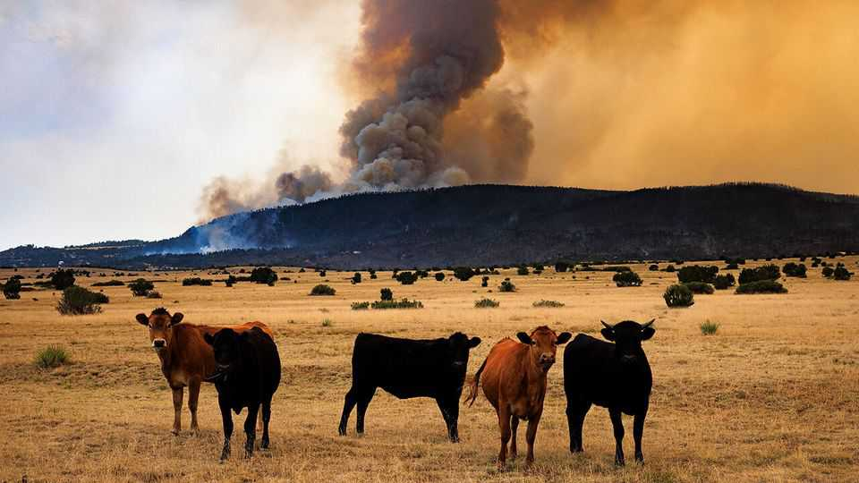

The World Bank has ditched its climate targets
The rise and fall of the institution’s love for green growth
July 9th 2026

IN JUNE 2023 the world’s biggest development bank seemed to be undergoing a transformation. At a summit in Paris, the president of the World Bank, which for 70 years had focused only on tackling global poverty, announced plans to reserve a large portion of lending for projects to alleviate climate change and its effects.
The bank’s then newish boss, Ajay Banga, had been hired in part for his green credentials, having pledged to plant 100m trees in his previous job as the chief executive of Mastercard, and he was proving popular. The crowd, which included Emmanuel Macron, the French president, and Abiy Ahmed, the prime minister of Ethiopia, celebrated with a standing ovation. As Mr Banga left the stage, he was diverted by Mr Abiy’s aide for a selfie. A year later the World Bank ponied up $43bn, or 44% of the year’s lending, nearly hitting its formal target of channelling 45% of its loans to such causes.
Now the party is over. Last month, under American pressure, the 45% target was formally ditched. Bank officials have barely mentioned climate since Donald Trump returned to office in early 2025 (Mr Trump thinks climate change is a hoax and wants more fossil-fuel use, not less). European countries, with more environmentally minded electorates, fought hard for the target to stay.
The sudden drought in climate finance could, it is true, slow the developing world’s decarbonisation efforts. However, for the world’s poorest countries, the World Bank’s climate reversal could yet turn out to be good news.
The green shift was always controversial. A split soon emerged between development types, inside and outside the bank. One group believed that spending on things like wind turbines (for renewable power), electric vehicles (to reduce pollution) and mangrove forests (to stop flooding) were vital to prepare developing countries for rising temperatures. Another lot believed that this diverted money from clinics, schools and roads that immediately helped the poorest places.
To sharpen the division, Mr Banga’s big climate push happened just when rich countries were falling out of love with development assistance. As aid budgets and contributions to the World Bank froze in real terms, climate commitments would require budget cuts elsewhere. Bank officials demurred, saying that projects that alleviated poverty also protected the planet. Mr Banga argued that there was little difference between spending on one or the other. If that were true, many officials in the poorest countries wondered, why ring-fence climate spending at all?
At the end of 2024 the bank increased its climate pledges again, promising to provide $120bn annually by 2030, along with other international institutions. However, Mr Trump’s return to the White House stopped the momentum. America’s concerns ran deeper than the president’s reflexive dislike for green do-goodery. In October 2025 Scott Bessent, the treasury secretary, proclaimed that focusing on climate was distracting from helping poor countries grow. He hinted that the bank needed to pull back or lose American support—a stark choice, since America is its biggest shareholder.
By April Mr Bessent’s officials had begun a quiet campaign to scrap the targets. Little that Mr Banga did to appease Mr Trump helped, including joining the Board of Peace, the committee supposed to oversee the reconstruction of Gaza. The protests of many European countries were weakened when war in Iran was making net-zero commitments that raise the price of petrol less popular at home.
The question now is what happens to the balance of the bank’s lending. The climate push meant more aid ended up with middle-income countries, which pollute more than the poorest and therefore find decarbonising costlier. So policymakers in the world’s poorest countries are relieved at the prospect that the needle swings back.
Yet some at the World Bank think that ditching climate targets will make no difference to the institution’s portfolio. New climate projects could simply be repackaged and approved as development loans. If so, many staff will consider that to be a victory stolen from a meddlesome America. At the same time, however, it may also show that the sceptical development types were right—and there was little need for targets to start with. ■
For more expert analysis of the biggest stories in economics, finance and markets, sign up to Money Talks, our weekly subscriber-only newsletter.